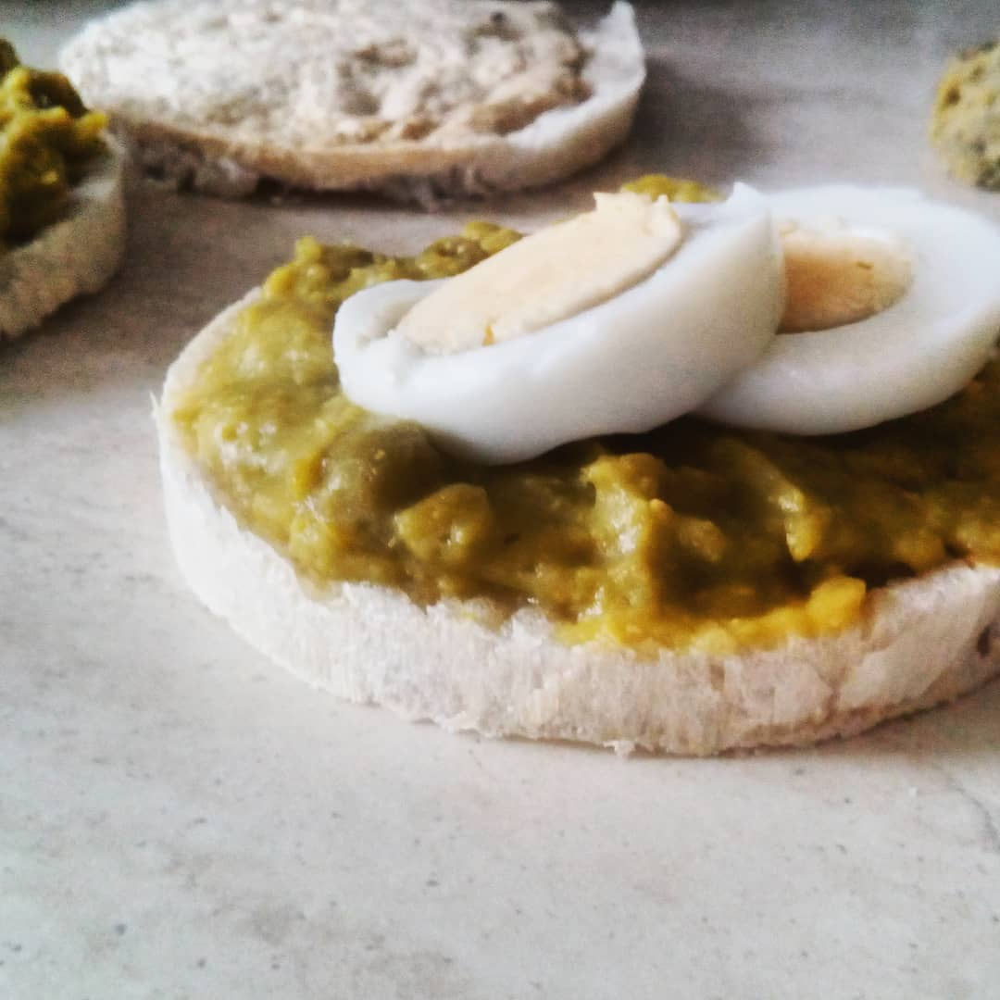

Zeleninová nátierka — Normy Jedál
I like the taste of green peas. Even in the spread that I prepared.
You need green peas cooked in salty water and some fresh or cream cheese. Put it in a blender, season with pinch of salt and black pepper (optional) and blitz to make it creamy.
.
#myglutenfreemeals #spreadlove #spread #natierky #hrasok #hrášok #hrasek #guisantes #pomazanky #snacktime #snack #glutenfreesnack #vegetablespread #vegetablespreads #natierka #natierka #nátierky #zeleninovanatierka #zeleninovapomazanka #groszek #greenpeas #greenpeasspread #peas #guisantesverdes #hraskovanatierka #hraskovapomazanka #pomazánky #pomazanka